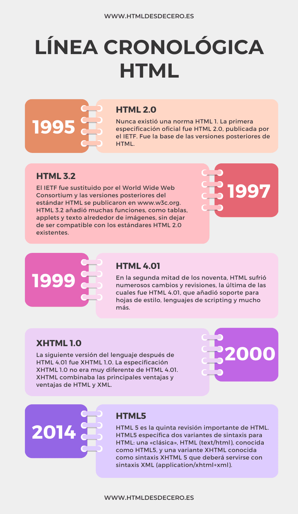

1º de Administración de Sistemas Informáticos en Red
Datos del proyecto
Autores
Lorenzo Falo Nuez
Ángel Alba Enatarriaga
David Lanzarote López
Robert Alexandru Maican
Tutor
Abraham
Fecha de entrega
Indefinida
Curso
1º de Administración de Sistemas Informáticos en Red
Índice
Introducción
Tenemos que crear una forma de gestionar un almacén de hardware que nuestros profesores nos van a dar.
Herramientas del proyecto
Para realizar este proyecto hemos utilizado las herramientas de Git/Github, Neocities, SQLite, Balsamiq, Magnific y Visual Code Studio.
Objetivos del proyecto
Crear un inventario para gestionar un almacén, incluyendo una base de datos, una página web y documentación.
Requisitos del proyecto
Un equipo funcional, un inventario digital, documentación técnica, justificación de las compatibilidades, un sistema operativo instalado y configurado, una base de datos, una propuesta de transformación digital y una memoria del proyecto.
Planificación
A lo largo del proyecto, al grupo se nos ha asignado diferentes retos, cuestiones o problemas.
Día 1: Instalar Ubuntu (Lorenzo).
Problemas: El sistema operativo (Ubuntu) pide usuario y contraseña.
Solución: Reinstalar el sistema operativo de 0.
Día 2: Desmontar el equipo y realizar inventario de los componentes, instalar Ventoy en el USB (realizado en colaboración del grupo).
Problemas: Las conexiones del panel frontal no se conectaron de manera correcta.
Solución: Alex ha revisado las conexiones del panel frontal y las ha reordenado de manera correcta, permitiendo que el ordenador se encienda perfectamente.
Día 3: Clonar repositorio del proyecto en Github, prácticas individuales de HTML.
Problemas: No estábamos familiarizados con Github.
Solución: Prueba y error; finalmente Lorenzo tuvo que usar el CMD para clonar el repositorio, submodular y subirlo a Github a través de git.
Día 4: Limpieza de código HTML, añadir nuevas funciones al HTML del inventario e implementación de CSS para la IU (Alex), reorganización de base de datos (Ángel y Lanzarote).
Problemas: No hemos podido pasar de drawdb a SQLite y no hubo una solución clara.
Solución: Acabamos haciendo todo manualmente desde 0.
Día 6: Implementar página del inventario en Github/Neocities (Alex y Lorenzo), revisar si el sistema funciona perfectamente.
Problemas: Ninguno.
Día 7: Implementación de hipervínculos regresivos y otras funciones CSS en Neocities (Lorenzo), realización del mockup de la web (Ángel y Lanzarote), implementación de efecto “wow” en la web (animación de intro, vínculos en la página web, etc.).
Problemas: Ninguno.
Día 8: Continuación del trabajo previo sin terminar (en grupo).
Problemas: Ninguno.
Día 9: Continuación del mockup en Balsamiq (Ángel y Lanzarote), continuación del documento (Alex y Lorenzo).
Problemas: Terminamos la documentación expuesta en un formato diario y no como la plantilla de informe planteada, por lo que el día 10 se procede al cambio.
Día 10: Realización del documento correcto a petición de Marta (Lorenzo y Alex).
Problemas: Ninguno.
Desarrollo del proyecto
Tecnologías/Herramientas empleadas
Las tecnologías utilizadas han sido las siguientes:
La documentación técnica utilizada en la búsqueda de información fue la información que aparecía en la página oficial de PcComponentes, Amazon España, The Retro Web, algunos manuales de instalación, PROComponentes, technical.city, dragonsteelmods.com y www.frostytech.com.
A continuación se pueden ver los enlaces a los distintos componentes en los que hemos sacado la información:
Inventariado físico completo: Se logró desmontar el equipo asignado, identificar cada uno de sus componentes de hardware y registrar toda la información para dar inicio al control del almacén y analizando compatibilidades de los distintos componentes con las placas bases de nuestro almacén.
Desarrollo e Implementación de la Base de Datos
Hemos empezado a crear el inventario en una base de datos en SQLite al nivel y conocimiento de reto en la actualidad.
Diseño en el ámbito Web
Se elaboró el mockup de la web utilizando Balsamiq, asegurando una planificación visual antes del desarrollo.
Se programó el sitio web utilizando código en HTML y CSS.
Efecto “Wow”: Se integraron elementos dinámicos atractivos, como una animación de introducción y vínculos interactivos dentro de la página.
Publicación: La página web del inventario se subió en la plataforma de GitHub para su acceso público.
Soporte Técnico y Configuración de Sistemas
Puesta a punto del sistema operativo: Se soluciona el bloqueo de credenciales inicial mediante la reinstalación limpia desde cero de Ubuntu, dejando el equipo completamente operativo.
Se configuró un almacenamiento USB multiarranque utilizando Ventoy.
Propuesta de transformación digital
Como posibles mejoras futuras exponemos la siguiente propuesta de transformación digital.
Propuesta 1: Identificación Única mediante Etiquetado QR Inteligente
Implementar un sistema de lectura de etiquetas de códigos de barras o códigos QR en el almacén físico, vinculados mediante una API web para realizar altas y bajas automáticas de stock desde dispositivos móviles.
CE2A Clasificación y Versiones
¿Has identificado y clasificado en la memoria técnica los lenguajes de marcas relacionados con la Web y la evolución de sus distintas versiones (ej. HTML4, XHTML, HTML5)?
El HTML 1.0 (de 1991 a 1993) fue la primera versión de HTML, que solo tenía funcionalidades básicas. En 1995, HTML 2.0 se estandarizó oficialmente. En 1997, HTML 3.2 incorporó las tablas y mejoró la presentación de los documentos. HTML 4.0 (1997) y 4.01 (1999) fomentaron la separación entre HTML y CSS. XHTML 1.0 se creó en 2000 como una versión más estricta de HTML, basada en XML. Sin embargo, XHTML 2.0 se acabó descontinuando debido a su rigidez, las dificultades de implementación y la falta de compatibilidad con las páginas existentes. HTML5 comenzó a desarrollarse en 2004 y se publicó oficialmente en 2014, incorporando elementos semánticos, soporte para audio y vídeo y nuevas funcionalidades. HTML 5.1 (2016) y HTML 5.2 (2017) introdujeron nuevas mejoras. Desde entonces, HTML se mantiene como un estándar vivo (HTML Living Standard), actualizado continuamente por WHATWG.

Línea cronológica de HTML (fuente: htmldesdecero.es)
¿Diferencias claramente en la memoria o exposición de las semejanzas y reglas sintácticas que diferencian los lenguajes HTML y XHTML?
HTML es más permisivo frente a XHTML:
Te permite dejar muchas etiquetas sin cerrar (aunque esta no sea la práctica correcta).
Las etiquetas vacías se pueden dejar sin cerrar (en XHTML, siempre hay que cerrarlas).
HTML te permite escribir las etiquetas en mayúscula, mientras que XHTML solo permite escribir en minúscula, dando un error si esto no ocurre.
Si no hay espacios, en HTML puedes poner atributos sin las comillas, por ejemplo: <input type=text> en vez de <input type="text">.
XHTML, al ser código XML, no permite errores y, al tener fallos, la página web simplemente muestra un error, mientras que HTML, al tener errores, activa un modo de compatibilidad que “adivina” el contenido de la página web.
CE2E XHTML en Gestión de Datos
¿Justificas la utilidad de la sintaxis estricta de XHTML cuando se integran páginas web con sistemas de gestión de información, inventarios y bases de datos?
Aunque XHTML ofrece una sintaxis más estricta que facilita la validación del código y puede favorecer la automatización de ciertos procesos, consideramos que HTML5 es una opción más adecuada para el desarrollo web moderno, sobre todo para nuestro proyecto.
HTML5 es más flexible y tolerante a errores sintácticos, lo que facilita el desarrollo, el mantenimiento y la actualización de las páginas web. Además, permite integrar formularios, tablas y elementos interactivos que pueden utilizarse para mostrar y gestionar información procedente de inventarios y bases de datos.
Es importante destacar que la conexión con bases de datos y la automatización de procesos dependen principalmente de las tecnologías del servidor, las API y los lenguajes de programación utilizados, y no exclusivamente de la sintaxis del documento HTML. Por tanto, HTML5 también permite desarrollar sistemas automatizados sin necesidad de aplicar las restricciones sintácticas de XHTML.
CE2G Ventajas de usar .CSS
Optimización del Rendimiento, Eficiencia y Carga de Archivos
Reducción del tamaño de los documentos HTML: Al eliminar los atributos de diseño obsoletos el código HTML se vuelve mucho más limpio y ligero reduciendo drásticamente el peso de los archivos.
Aprovechamiento del almacenamiento en caché: El archivo CSS externo (vinculado mediante la etiqueta <link>) se descarga una sola vez durante la primera visita. En las siguientes páginas, el navegador utiliza el archivo guardado en caché acelerando notablemente el tiempo de carga del sitio.
Mantenimiento Centralizado y Arquitectura de Código
Mantenimiento centralizado y eficiencia en el desarrollo: Nos permite guardar el estilo y colores corporativos en único archivo .css para que la modificación se replique instantáneamente tantas páginas HTML como queramos, eliminando la necesidad de repetir código de diseño.
Desarrollo en paralelo: Permite trabajar simultáneamente de forma independiente; el programador puede estructurar los datos en el HTML mientras el diseñador define el aspecto visual en el CSS.
Estructura Semántica, Accesibilidad y SEO
Mejora del posicionamiento en buscadores (SEO): Al estar el HTML libre de código de presentación, los motores de búsqueda (como Google) rastrean e indexan el contenido relevante de forma mucho más rápida y eficiente, mejorando significativamente la densidad de código frente a texto.
Mayor accesibilidad web multidispositivo: Los lectores de pantalla para personas con discapacidad visual leen el código estructurado secuencialmente. Al separar presentación, se garantiza que estos dispositivos interpreten correctamente el contenido (encabezados, párrafos, listas) facilitando el uso.
Flexibilidad, Adaptabilidad y Diseño Responsivo
Independencia del dispositivo y factores de forma: Permite adaptar la visualización de un mismo contenido a diferentes dispositivos (pantallas de escritorio, smartphones, tabletas o incluso versiones de impresión).
Herramientas de reestructuración dinámica: Mediante el uso de herramientas como unidades del viewport, container queries, Flexbox… es posible reconfigurar por completo la disposición espacial de la página web sin necesidad de tocar ni una sola línea del código HTML base.
Cumplimiento de Estándares Oficiales
Cumplimiento de los estándares oficiales del W3C: El Consorcio W3C ha declarado formalmente obsoletos los elementos y atributos de marcado destinados únicamente a la presentación. El uso de CSS es el estándar oficial exigido para definir el aspecto visual en la web moderna.
Cuestionario de Preguntas Teórico-Prácticas Marta
Sobre la evolución web (CE2A)
¿Qué necesidades técnicas impulsaron la transición desde las primeras versiones de HTML hacia XHTML y el posterior desarrollo de HTML5?
La transición desde las primeras versiones de HTML hacia XHTML y, posteriormente, HTML5 estuvo impulsada por la necesidad de mejorar la estandarización, la compatibilidad entre navegadores y la integración de nuevas tecnologías web.
HTML: Permitía crear páginas web, pero los navegadores interpretan el código de forma diferente y toleraban errores, dificultando su mantenimiento.
XHTML: Introdujo las reglas estrictas de XML, exigiendo un código bien estructurado para facilitar su validación y procesamiento.
HTML5: Surgió para adaptarse a la web moderna, incorporando etiquetas semánticas, audio, vídeo y gráficos, además de reducir la dependencia de complementos externos como Flash.
Sobre el análisis del código (CE2B, CE2C)
Muestra un fragmento de tu código HTML del inventario e identifica la jerarquía de al menos tres niveles de nodos en el árbol DOM, explicando el propósito de cada etiqueta y atributo utilizado.
A partir de la línea 67:
<table> — Nivel 1: Tabla completa del inventario (línea 67).
<tbody> — Nivel 2: Cuerpo de la tabla (línea 77).
<tr> — Nivel 3: Fila correspondiente al procesador (línea 79).
<td> — Nivel 4: Celda con características (línea 82).
<ul> — Nivel 5: Lista de características (línea 83).
<li> — Nivel 6: Cada característica individual (línea 84).
Sobre la rigurosidad sintáctica (CE2D, CE2E)
¿Por qué un documento XHTML mal formado puede fallar al conectarse con una base de datos o sistema de inventario, mientras que HTML5 suele ser más permisivo con los errores del desarrollador?
Un documento XHTML mal formado puede provocar errores porque XHTML exige una sintaxis estricta: las etiquetas deben cerrarse correctamente, los elementos deben anidarse de forma adecuada y los atributos deben escribirse siguiendo las reglas de XML. Si no se cumplen estas normas, el documento puede no procesarse correctamente y dificultar la comunicación con otros sistemas, como una base de datos o un sistema de inventario.
En cambio, HTML5 es más permisivo y permite que los navegadores corrijan automáticamente muchos errores de sintaxis, por lo que la página puede seguir mostrándose aunque el código no sea perfecto.
Sobre el diseño y presentación (CE2G, CE2H)
¿Qué problemas surgirían al mantener la web del almacén si aplicaras los estilos visuales directamente con atributos HTML incrustados en lugar de utilizar un archivo CSS externo?
Los problemas que surgirían, entre otros, serían que si se quisieran cambiar los colores corporativos de la página habría que buscar entre las cientos de líneas para encontrar dentro del código los colores. Por otro lado si estuviera en un CSS externo se cambian los colores desde el CSS y ya se cambian automáticamente y más fácil dentro de la página, además de también aplicarse a otros sitios HTML si usan la misma hoja de estilos CSS.
En cambio, al utilizar un archivo CSS externo, bastaría con modificar los estilos en un único lugar para que los cambios se aplicaran automáticamente a todas las páginas HTML que utilizaran esa hoja de estilos.